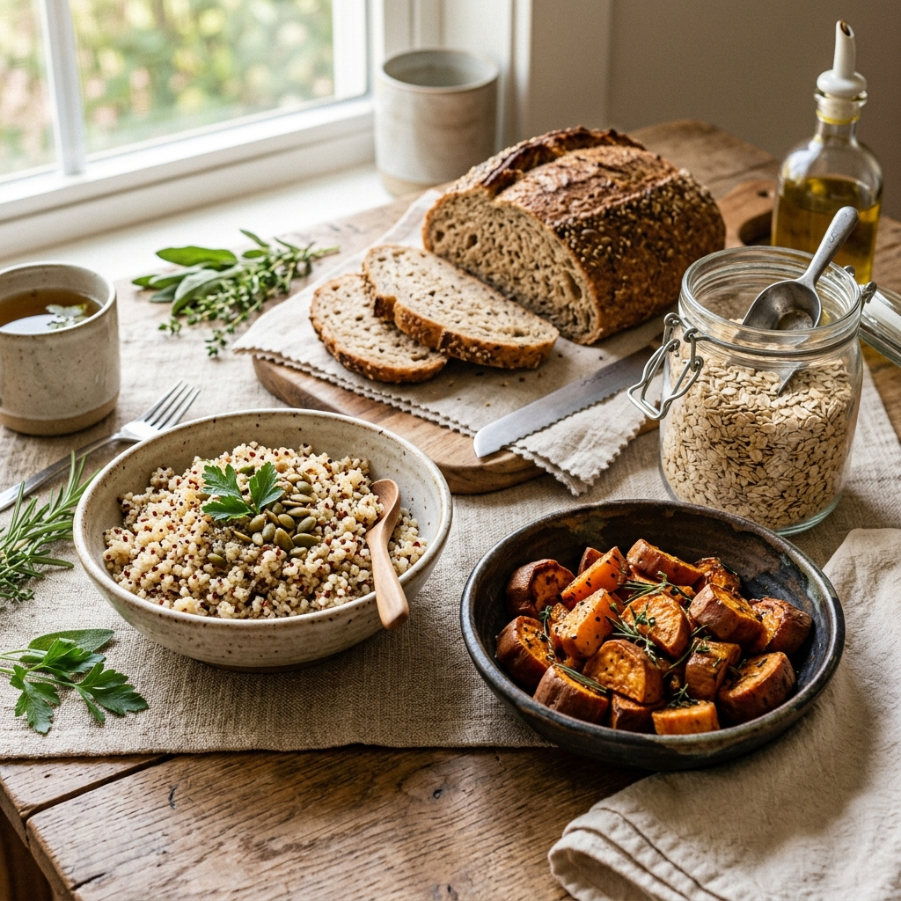
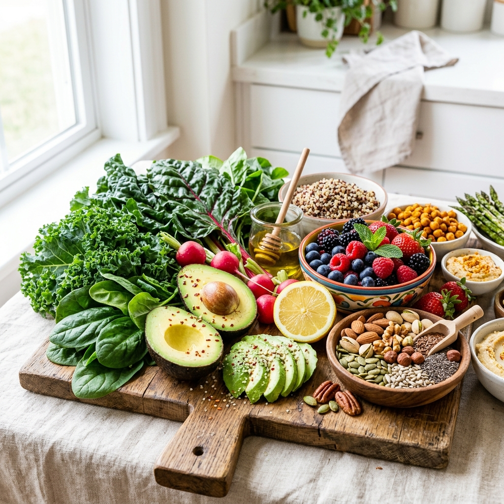

March 15, 2026
Understanding Gut Health and Immunity
Explains how probiotics improve gut barrier function and immunity, and supports your statement that gut health is key to immune defense.
Read ArticleInsights, recipes, and practical advice on cultivating a healthier, more balanced life.
Explains how probiotics improve gut barrier function and immunity, and supports your statement that gut health is key to immune defense.
Read Article
Clearly explains that carbs are not "bad" and highlights the difference between healthy and unhealthy carbs.
Read ArticleCovers mindful eating, digestion, and behavior-based nutrition approaches aligned with your wellness goals.
Read Article
Shows how diet, gut health, and insulin resistance are directly linked in PCOS management through targeted nutrition interventions.
Read Article